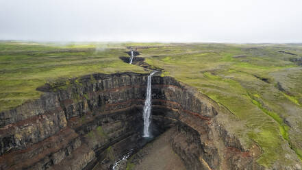
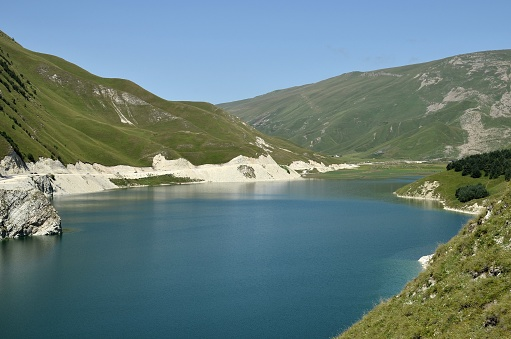

Содержание
Введение
Дагестан, расположенный в сердце Северного Кавказа, является республикой Российской Федерации, которая поражает своей уникальностью. Его столица, Махачкала, — это динамичный город на берегу Каспийского моря, где современность переплетается с древними традициями. С площадью 50 270 км² эта земля гор и долин является домом для около 3 миллионов человек, создавая увлекательный культурный и языковой мозаичный узор. Русский язык является официальным, но многочисленные местные языки, такие как аварский, лакский, даргинский и лезгинский, звучат в каждом уголке, напоминая о этническом разнообразии региона. Основной религией является ислам, но мирное сосуществование с христианскими и иудейскими меньшинствами свидетельствует о терпимости и уважении, которые характеризуют Дагестан.
История
История Дагестана
Культурное разнообразие: Населенный с древних времен, Дагестан является плавильным котлом культур и языков, отражающим его богатую историю.
Ислам: Приход ислама в VII веке изменил регион, объединив исламские элементы с местными традициями.
Русское господство: В XIX веке Россия завоевала Дагестан, модернизировав его, но также вызвав напряженность и конфликты.
Советская эпоха: При советском режиме Дагестан развивался экономически, но также подвергался репрессиям.
Независимость: После распада СССР в 1991 году Дагестан присоединился к России, столкнувшись с такими проблемами, как терроризм.
Современность: Дагестан сохраняет свою культуру и традиции и становится перспективным туристическим направлением.
Культура и традиции
Дагестан — это плавильный котел культур и традиций, где музыка, танцы, костюмы и кухня варьируются от одной этнической группы к другой, создавая уникальный культурный мозаичный узор в мире. Народные танцы, наполненные энергией и страстью, рассказывают истории о любви, храбрости и древних традициях. Традиционная музыка с ее гипнотическими мелодиями и ритмами сопровождает праздники и торжества, создавая праздничную и радостную атмосферу. Традиционные костюмы с яркими цветами и изысканными узорами отражают идентичность и гордость каждой этнической группы. Кухня с ее насыщенными и разнообразными вкусами является отражением разнообразия ингредиентов и кулинарных техник региона.
Места интереса
Дербент

Тысячелетний город на берегу Каспийского моря с впечатляющей крепостью и стенами, включенными в список ЮНЕСКО. Историческое сокровище с древними улицами, мечетями и рынками, которые напоминают о прошлых эпохах.
Сулакский каньон

Один из самых глубоких и длинных каньонов в мире с захватывающими дух пейзажами. Река Сулак извивается на дне, добавляя умиротворения этому дикому пейзажу.
Аул Кубачи

Горное село, известное своими серебряными изделиями и ювелирными украшениями. Жители Кубачи — мастера серебряного дела, создающие уникальные изделия, сочетающие древние техники с современными дизайнами.
Водопад Тобот
Один из самых высоких водопадов в России с впечатляющим падением воды, которое оставит вас в восторге. Идеальное место для любителей природы и фотографии.
Гунибское плато

Историческое место, где происходили сражения во время Кавказской войны в XIX веке. Предлагает панорамные виды на горы и имеет памятники, посвященные этим историческим событиям.
Озеро Кезеной-Ам
Самое большое и глубокое озеро на Северном Кавказе с кристально чистой водой и горными пейзажами. Идеальное место для купания, рыбалки и наслаждения природой.